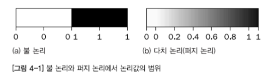

퍼지 논리(fuzzy logic)는 모호한 대상을 다루는 논리이다.
퍼지 논리는 퍼지 집합, 즉 모호한 정도를 조절할 수 있는 집합에 대한 이론이다.
퍼지 전문가 시스템은 퍼지 규칙을 활용하여 만든 전문가 시스템이다.
그리고 퍼지 규칙은 퍼지 집합을 기반으로 만든 규칙의 형태이다.
퍼지 논리는 로트피 자데(Lotfi Zadeh)가 이전의 퍼지 집합에 대한 연구를 바탕으로 발전적으로 연구한 분야이다.
퍼지 논리를 고전 이진 논리(binary logic)처럼 소속을 분명히 하는 것이 아니라,
어느 정도 속하는 지를 바탕으로 지식을 표현하는 일련의 수학 원칙으로 정의하였다.
2차 논리인 불 논리와 달리 퍼지 논리는 여러 개의 값을 가지는 다치 논리이다.
퍼지 논리는 소속도와 진리도를 다룬다. 이러한 소속도와 진리도는 여러 개의 값을 가질 수 있다.
퍼지 논리는 완전한 거짓인 0과 완전한 참인 1 사이에 있는 연속된 논리값을 사용한다.
퍼지 논리는 검정과 하양만 다루는 대신 다양한 회색을 사용한다고 볼 수 있다. 즉 어떤 대상이 참이면서도 거짓인 경우를 허용한다.
이 그림에서 볼 수 있듯이 퍼지 논리는 불 논리에 논리값 범위를 더한 것이다.
고전적인 이진 논리는 다치 퍼지 논리의 특수한 경우로 볼 수 있다.
퍼지 논리는 완전한 거짓인 0과 완전한 참인 1 사이에 있는 연속된 논리값을 사용한다.
퍼지 논리는 검정과 하양만 다루는 대신 다양한 회색을 사용한다고 볼 수 있다.
즉 어떤 대상이 참이면서도 거짓인 경우를 허용한다.
이 그림에서 볼 수 있듯이 퍼지 논리는 불 논리에 논리값 범위를 더한 것이다.
고전적인 이진 논리는 다치 퍼지 논리의 특수한 경우로 볼 수 있다.

퍼지 집합 ↔ 고전적인 집합 = 크리스프 집합
퍼지 집합은 경계가 모호한 집합이다.
크리스프 집합과는 달리 원소가 퍼지 집합에 어느 정도 속한다는 것이 퍼지 집합의 기본 발상이다.
명제는 참 또는 거짓이 아니라 어느 정도는 부분적으로 참이거나 부분적으로 거짓으로 나타낼 수 있다.
여기서 사용되는 정도는 보통 [0,1] 범위의 실수값으로 나타난다.
크리스프 집합은 퍼지 집합과 대비된 고전적인 집합이다.
X를 고전적인 크리스프 집합이고, x를 원소라 가정한다면,
원소 x는 X에 속하거나, X에 속하지 않거나 둘 중 하나가 된다.
고전적인 집합론에서는 이 집합의 경계에 명확하게 경계를 긋고,
이 집합의 원소에는 1 대입하고, 원소가 아닌 것에는 0을 대입한다.
그래서 크리스프 집합은 이분법 원리가 된다.
퍼지 집합과 함께 퍼지 규칙을 만드는데 필요한 개념이다.
퍼지 집합론의 뿌리에는 언어 변수라는 개념이 들어있다.
언어 변수는 퍼지 변수(fuzzy variable)라고 할 수 있다.
또한, 언어 변수는 언어값을 가질 수 있는 단어 변수이고,
언어값은 언어 변수에 지정될 수 있는 형용사 또는 동사라고 할 수 있다.
언어 변수는 ‘헤지’ 라고 하는 퍼지 집합 한정사의 개념을 수반한다.
헤지는 퍼지 집합의 모양을 바꾸는 용어가 된다.
따라서 헤지는 동사, 형용사 부사 등 전체 문장의 의미를 변경할 수 있다.
또한, 범용 수식어, 확률, 한정사 등의 형태로도 사용된다.
퍼지 규칙은 퍼지 집합을 이용한 규칙이다.
퍼지 규칙을 활용하여 퍼지 전문가 시스템을 개발하는 절차